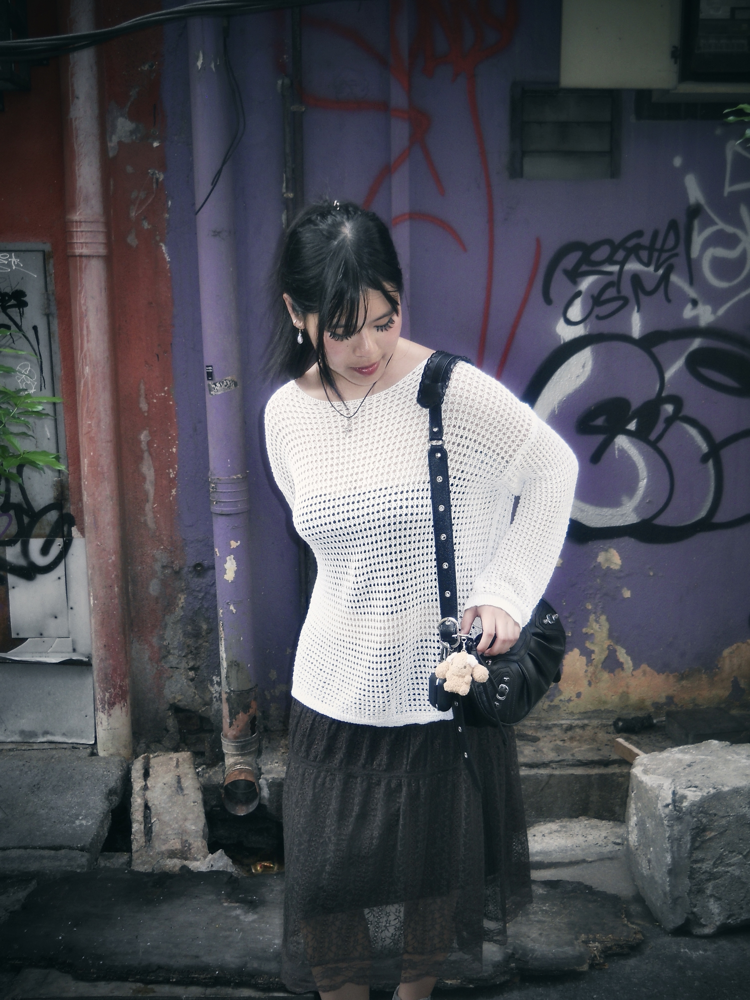

The article "Game Design UX Best Practices Guide" brought me back to the times when I first realized how impactful game mechanics could be on user engagement. What stood out to me most was the emphasis on user-centered design principles in gaming—where player experience is paramount, not just flashy graphics or complex coding. It reminded me of my own approach to UX research: understanding not just what users do, but why they do it and how they feel throughout the process.
One specific insight that resonated with me was the idea of feedback loops. Games that successfully keep players informed through subtle cues or direct signals have always been the most memorable to me. It’s not just about telling users they’ve completed a task, but about making that moment feel rewarding, like reaching a new level or finding a hidden treasure. This translates seamlessly into app and web design—a satisfying chime when submitting a form or a smooth animation when transitioning between screens can elevate a user's overall experience.
Thinking back to my childhood, playing story-driven games where each decision had a consequence, I realized how those experiences shaped my understanding of choice architecture. This guide reinforced that those moments aren’t just game quirks; they are powerful UX strategies that keep users engaged and coming back. As a designer, it pushes me to integrate interactive storytelling and responsive feedback into my projects, making them not only functional but memorable.
Visual Thinking Analysis
1. This image is interesting because it takes into consideration the environment I am wearing my outfit in. This photo was taken in Malaysia, where modest fashion is most popular. I was attending the REXL, a community and cultural hub that holds events and pop ups for the youth. I wanted to incorporate a modest style with a twist of more contemporary and personal style.
2. This image relates to my collection because it is one of many outfits I have pieced together with consideration to its quality.
3. My collection conveys that I am a creative person, who puts in meticulous effort to the details in my outfits in relation to the context I am wearing it in. I really love to spin my own way of wearing things given an event, occasion, or location.

Kim Luong, 2024.
1. This image appears to be a high shot resolution of a historical building located presumably in Asia. It features multiple arches within the building and has a pointed dome at the top. It seems to be made of red brick and is along a courtyard.
2. The most interesting aspect of this image is the angle and lighting of the shot. The building arches are dark and showcase a side view looking up towards the top. However, the sky is not oversaturated or overexposed and the touch of blue along with the red and brown of the building really compliments each other. The building is centered at an angle and the photographer seems to use the rule of thirds.
3. The most obvious aspect of this image is that there is some historical monument and it resides in a courtyard with multiple floors. It may be some sort of traditional or religious structure. What's mysterious about this is what kind of structure this is and what the interior of it looks like, as the arched tunnels are darken.
Sanjana Pethe, 2024.
Visual Thinking Strategies Research
Once Upon a Picture is a captivating resource that uses visual storytelling to inspire deep thinking and creativity. The website offers a wide range of curated images designed to encourage imaginative responses, making it an ideal tool for educators, writers, and visual thinkers. Each image is accompanied by questions or prompts that invite users to reflect, infer, and create narratives based on what they see. This method not only stimulates creative thinking but also enhances cognitive skills like prediction and deduction.
For example, in The Inference Collection, images are carefully selected to encourage viewers to explore the deeper meanings behind them. Whether it's a surreal landscape or a character-focused scene, users are prompted to consider context, emotion, and narrative possibilities. This interactive approach encourages users to think beyond the surface and engage with the visual content in a meaningful way.
As someone passionate about design and storytelling, Once Upon a Picture resonates with me because it demonstrates how visual stimuli can be a powerful tool for cognitive engagement. It aligns with my belief that well-crafted images can spark curiosity and inspire innovative thought processes, whether for educational purposes or personal creativity.
Explore the site here
Overlays Design Pattern Research
TWhen reflecting on best practices for modals, overlays, and dialog windows, a few key points stood out. Modals should be used sparingly and only when necessary, as they interrupt the user's flow by demanding immediate attention. For instance, they are most effective for critical actions like confirming deletions or form submissions. A key takeaway is the importance of context: modals must fit the user's current task and not be overused, which could lead to frustration or "modal fatigue."
Another best practice is ensuring that modals are easily dismissible. This includes offering clear close buttons, the ability to click outside the modal to exit, or using the Escape key. If a modal contains important content, make sure users cannot accidentally close it without confirmation to prevent data loss. Visual accessibility is equally critical—modals should have sufficient contrast, intuitive layouts, and support keyboard navigation to ensure usability for all users.
In my experience working with front-end design, I’ve seen how critical it is to get overlays right. They can enhance user experience by providing concise, task-specific information without taking users to a new page. However, if designed poorly, they can be disruptive. Aligning with these best practices, I’m reminded of how thoughtful interaction design can influence user satisfaction.
Research Form Design
The article Best Practices for Form Design on UX Design provides essential guidelines for creating user-friendly forms that enhance the overall user experience. One key aspect is keeping forms as simple as possible—each field should serve a clear purpose to avoid overwhelming users. Proper labeling and field alignment are crucial to guide users effectively, along with using real-time validation to help them correct errors instantly, reducing frustration. Additionally, grouping related fields and maintaining logical flow improves usability, while mobile-friendly designs ensure accessibility across devices.
The article also highlights the importance of providing users with feedback after submitting a form, such as confirmation messages or loading indicators, which reassures users that their information was successfully processed. These best practices not only enhance the aesthetic appeal of forms but also make them more functional, reducing cognitive load and improving conversion rates.
A form that follows these principles well is the sign-up form on Dropbox It’s clean, simple, and offers real-time validation, with clear labels and minimal required fields, making the process smooth and frustration-free for users.